Music Reviews
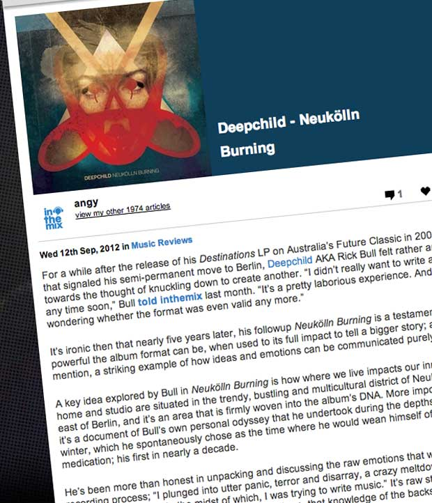
Deepchild - Neukölln Burning
12 September 2012Vincenzo - Wherever I Lay My Head
12 August 2011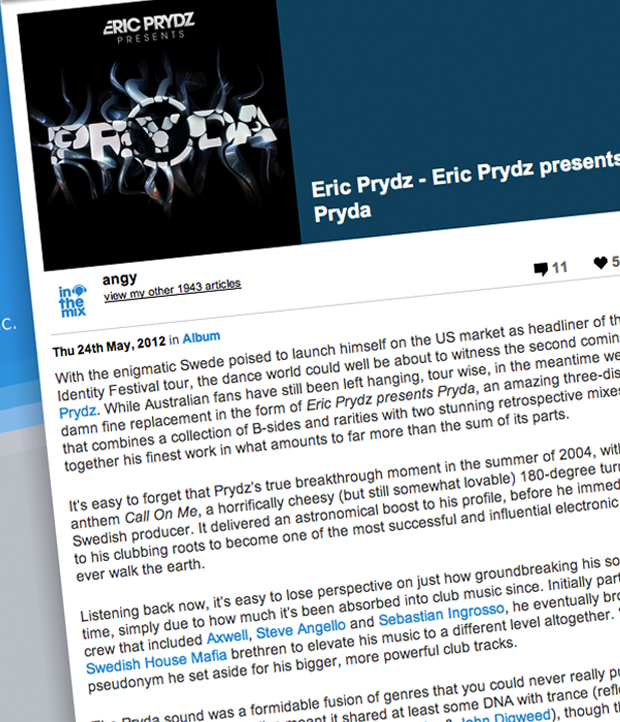
Eric Prydz - Eric Prydz presents Pryda
24 May 2012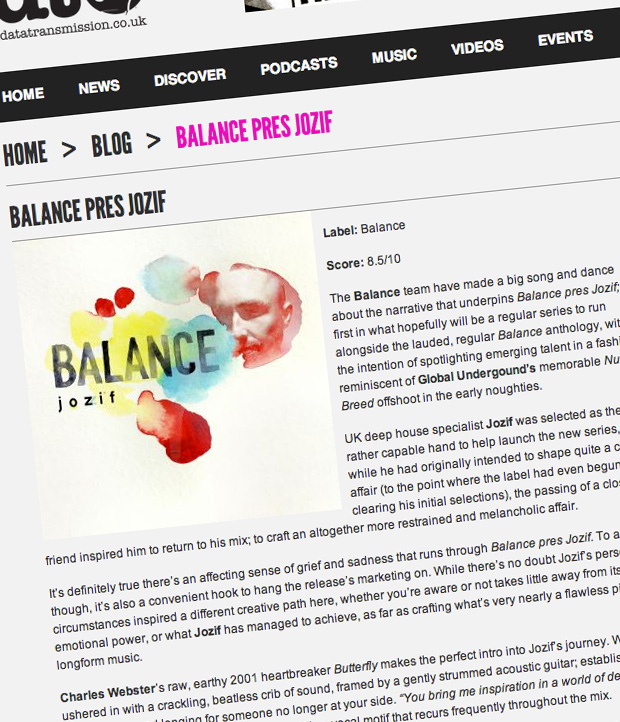
Balance Pres. Jozif
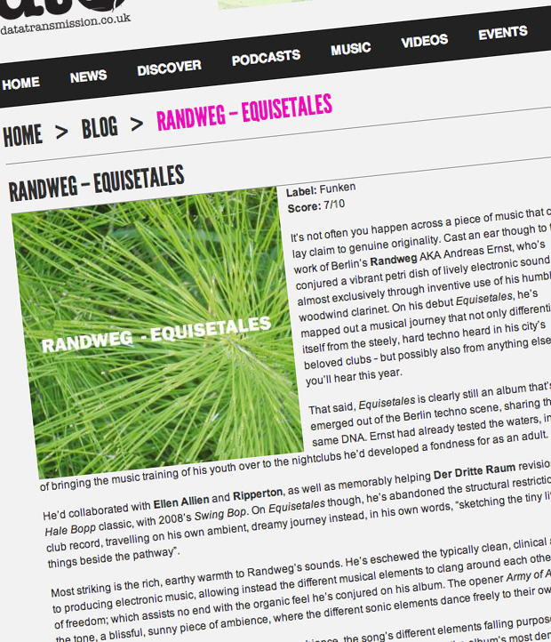
Randweg - Equisitales
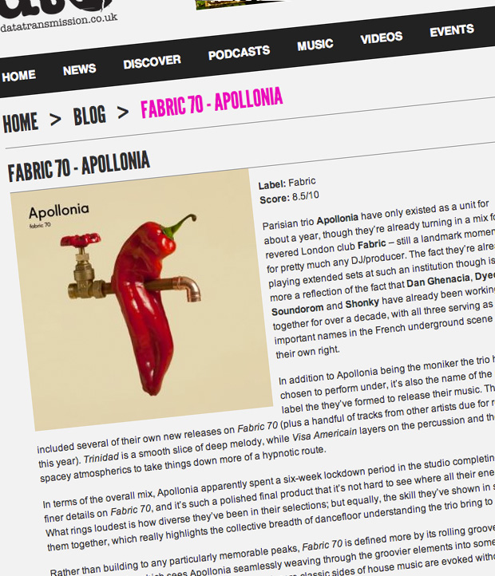
Fabric 70: Apollonia
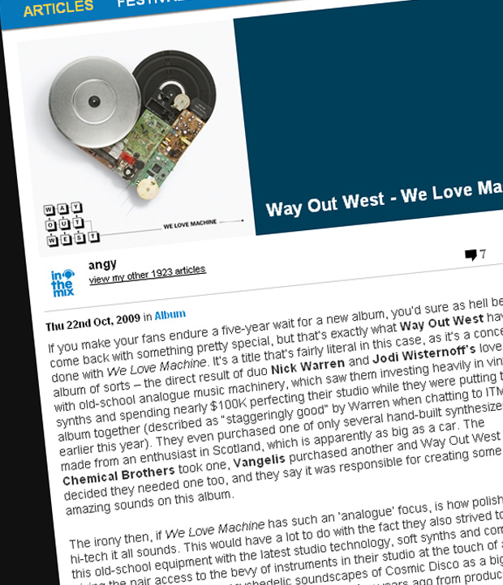
Way Out West - We Love Machine
22 October 2009Tech review: Sound of Berlin app
August 2011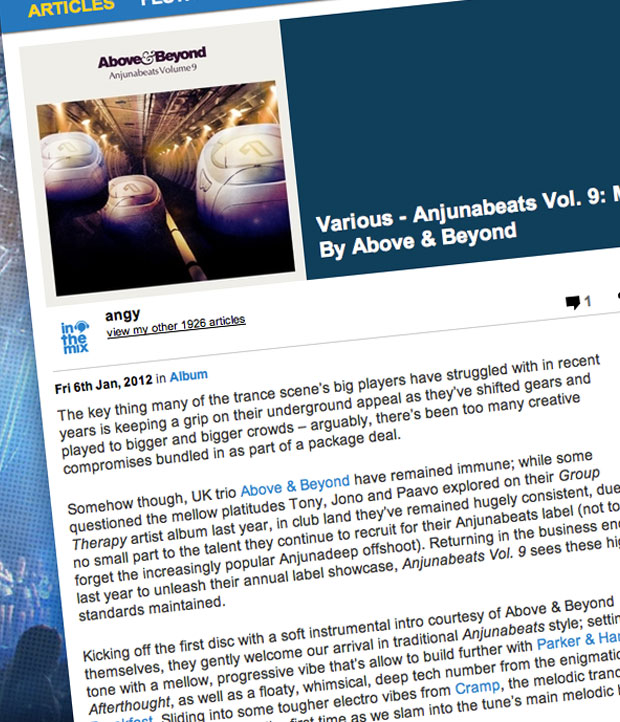
Various - Anjunabeats Vol. 9: Mixed By Above & Beyond
6 January 2012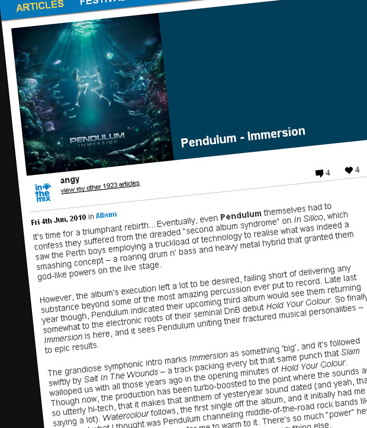
Pendulum - Immersion
4 June 2010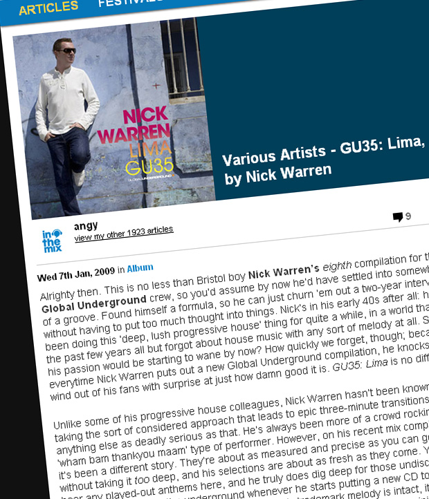
Various Artists - GU35: Lima, mixed by Nick Warren
7 January 2009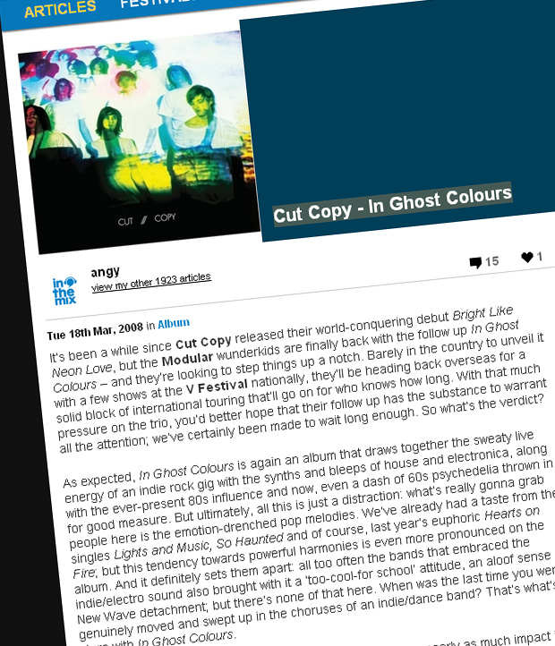
Cut Copy - In Ghost Colours
18 March 2008The Downward Spiral: Nine Inch Nails' Industrial Masterpiece Redefined Rock
13 September 2025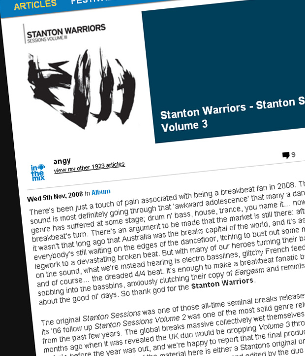
Stanton Warriors - Stanton Sessions Volume 3
5 November 2008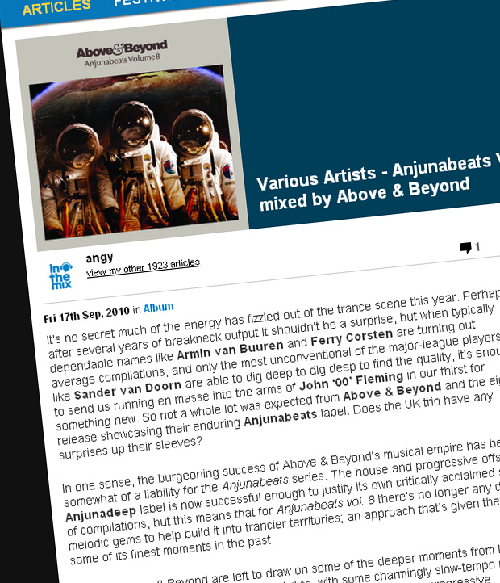
Various Artists - Anjunabeats Vol. 8, mixed by Above & Beyond
15 September 2010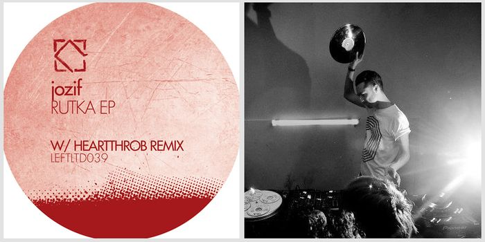
jozif - Rutka EP on Leftroom Limited
Dance Spirit - Insight EP on Supernature
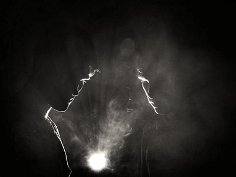
Bob Moses - Far From The Tree EP on Scissor & Thread
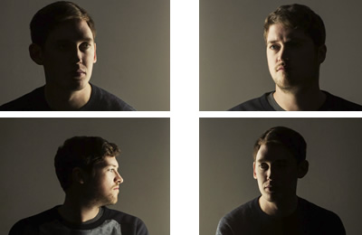
Dusky - Vanishing Point EP on Naked Naked
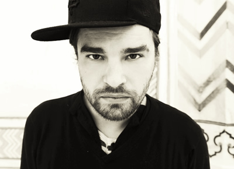
Cesare vs Disorder - Animals Club EP on Stock5
Andy Cato - Times & Places LP on Apollo Records
Anthony Collins - Exhibit C EP on Natural History
Beacon - The Ways We Separate LP on Ghostly International
Oliver Deutschmann - Out of the Dark LP on Vidab
Andrew Bayer - If It Were You, We’d Never Leave
7 May 2013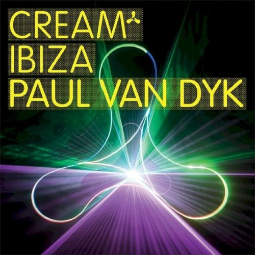
Various Artists - Cream Ibiza 2008, mixed by Paul van Dyk
12 August 2008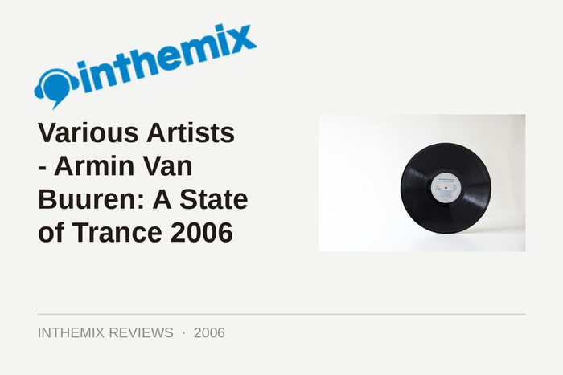
Various Artists - Armin Van Buuren: A State of Trance 2006
17 July 2006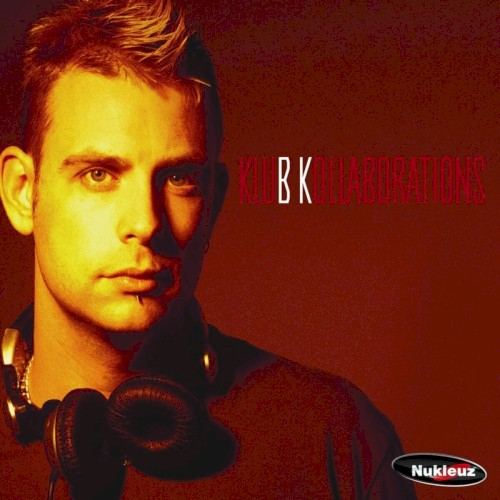
BK - Klub Kollaborations
9 September 2003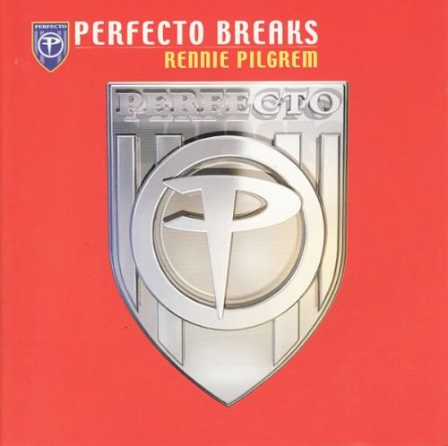
Rennie Pilgrim - Perfecto Breaks
30 May 2003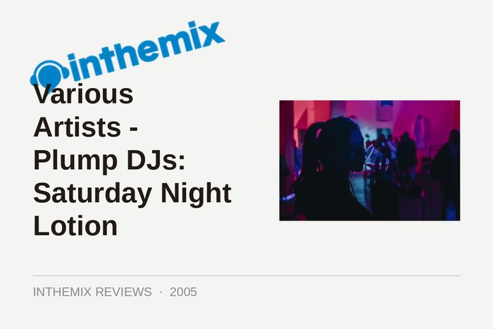
Various Artists - Plump DJs: Saturday Night Lotion
4 July 2005
Balance presents Kölsch
22 December 2014
Anjunadeep 05 – Mixed By Jody Wisternoff & James Grant
19 August 2013
Hernan Cattaneo – Balance 026
19 November 2014
Hot Since 82 - Little Black Book
27 September 2013
Shlomi Aber – Live At Sankeys Ibiza
8 July 2013
Radio Slave – Balance 023
4 June 2013
Clockwork – B.O.A.T.S
29 May 2013
FabricLive 69: Fake Blood
4 June 2013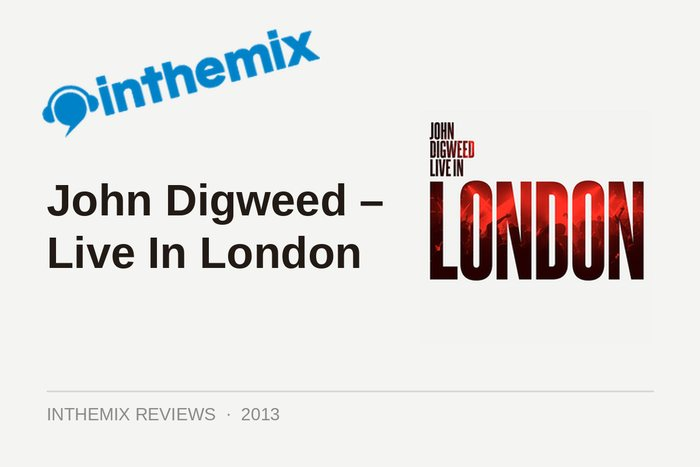
John Digweed – Live In London
16 January 2013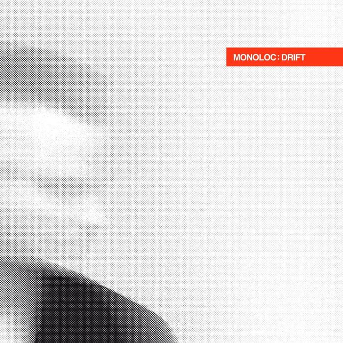
Monoloc - Drift
4 December 201216 Bit Lolitas - Supermarkt
11 October 2012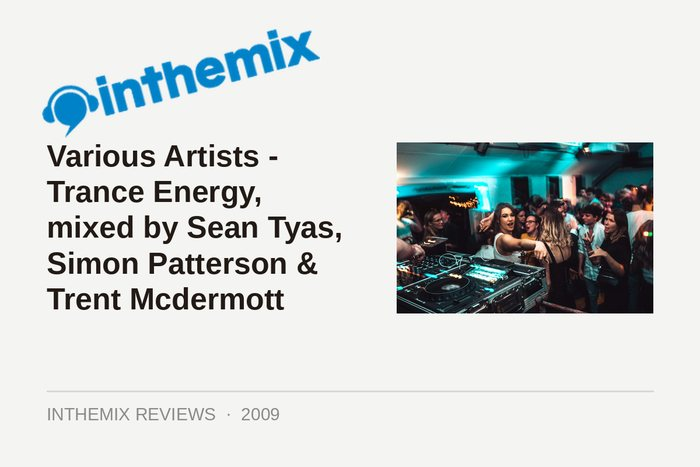
Various Artists - Trance Energy, mixed by Sean Tyas, Simon Patterson & Trent Mcdermott
8 April 2009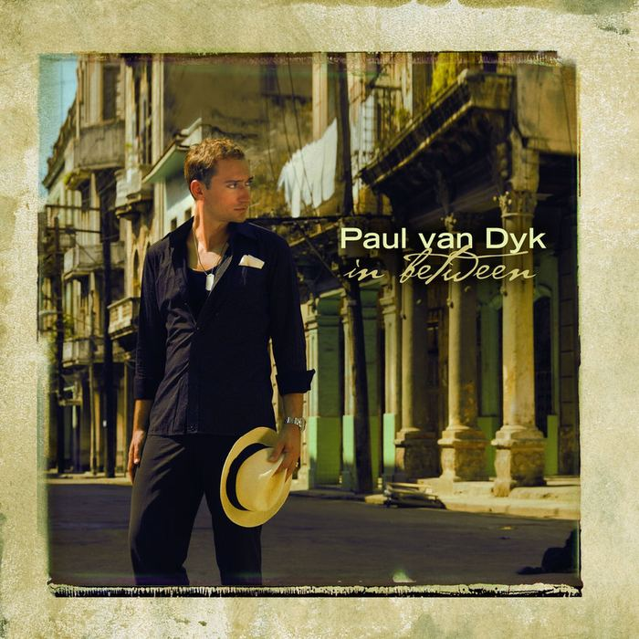
Paul van Dyk - In Between
8 October 2007Various Artists - Anjunabeats 100, mixed by Above & Beyond
3 June 2008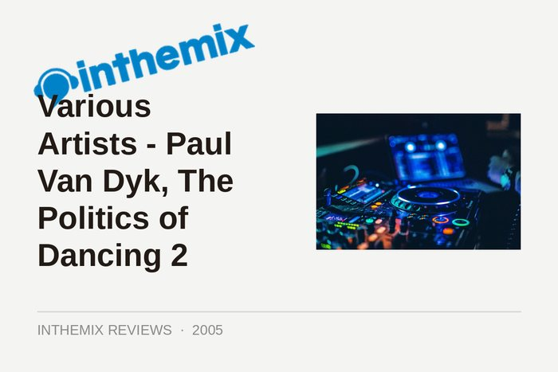
Various Artists - Paul Van Dyk, The Politics of Dancing 2
7 November 2005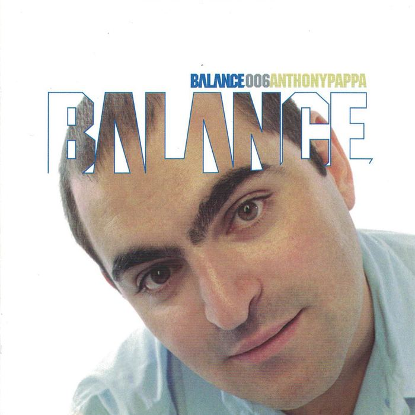
Various Artists - Balance006: Anthony Pappa
1 July 2004